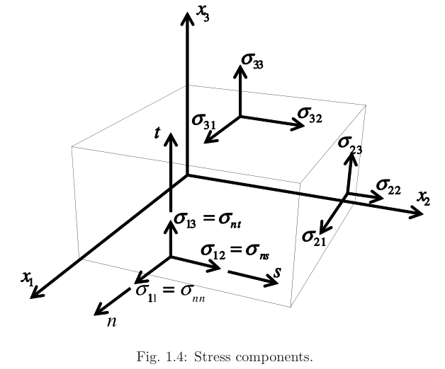
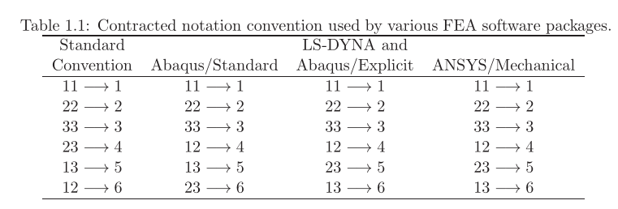

Note_FemPy_不同软件的刚度矩阵转换
对于1-2-3坐标系:

应力矩阵如下:
张量应变矩阵如下:
工程剪应变$\gamma=2*\varepsilon$
实际使用中会写成向量的形式:
但是不同的商业软件,书籍中,应力/应变向量的含义并不完全一致,导致刚度柔度矩阵需要注意区分.
在==复合材料力学. 胡更开第二版==,以及==Mechanics Of Composites Materials. Robert M.Jones 第二版==中,应力/应变的简写表示为:
以上可以称为**“Standard Convention”**
其他商业软件中的conventions:

根据上表,可愿意定义一个转换矩阵T,将应变应力从标准Voigt形式转换到Abaqus,Ls-dyna,Ansys等软件的应力应变形式:
使用以上的T矩阵,就可以将应变应力从标准张量形式转换到Abaqus的notation.此外,刚度矩阵的转换为:
For LS-DYNAand ANSYS, the transformation matrix is:
Code
根据以上公式,可以写出转换代码:
def tMatrix(target:str='abq-sta')->np.ndarray:
"""定义一个转换矩阵T,将应变应力从标准Voigt形式转换到Abaqus,Ls-dyna,Ansys等软件的应力应变形式"""
match target:
case 'abq-sta':
# Abaqus/Standard应力应变形式
t=np.array([[1,0,0,0,0,0],
[0,1,0,0,0,0],
[0,0,1,0,0,0],
[0,0,0,0,0,1],
[0,0,0,0,1,0],
[0,0,0,1,0,0]],dtype=float)
case 'ls-dyna':
# Ls-dyna应力应变形式
t=np.array([[1,0,0,0,0,0],
[0,1,0,0,0,0],
[0,0,1,0,0,0],
[0,0,0,0,0,1],
[0,0,0,1,0,0],
[0,0,0,0,1,0]],dtype=float)
case 'ansys':
# Ansys应力应变形式
t=np.array([[1,0,0,0,0,0],
[0,1,0,0,0,0],
[0,0,1,0,0,0],
[0,0,0,0,0,1],
[0,0,0,1,0,0],
[0,0,0,0,1,0]],dtype=float)
case 'abq-exp':
# Abaqus/Explicit应力应变形式
t=np.array([[1,0,0,0,0,0],
[0,1,0,0,0,0],
[0,0,1,0,0,0],
[0,0,0,0,0,1],
[0,0,0,1,0,0],
[0,0,0,0,1,0]],dtype=float)
case _:
raise ValueError("target参数错误")
return t
def StiffnessFormatTransform(C:np.ndarray,
target:str='abq-sta',
source:str='voigt')->np.ndarray:
"""将标准刚度矩阵C转换为ABAQUS格式的刚度矩阵
input:
C: (6,6) np.ndarray, 标准刚度矩阵
target: str, 目标格式,可选值'abq-sta'(Abaqus/Standard), 'ls-dyna'(Ls-dyna), 'ansys'(Ansys), 'abq-exp'(Abaqus/Explicit)
source: str, 源格式,可选值'voigt'(Voigt格式)
output:
C_target: (6,6) np.ndarray, 目标格式的刚度矩阵
"""
t=tMatrix(target)
if source=='voigt':
return t.T.dot(C).dot(t)
else:
assert True, f"从{source}到{target}的转换尚未实现"
def StressFormatTransform(S:np.ndarray,
target:str='abq-sta',
source:str='voigt')->np.ndarray:
"""将标准应力向量S={sigma11,sigma22,sigma33,tau23,tau13,tau12}^T转换为target格式的应力向量"""
t=tMatrix(target)
if source=='voigt':
return t.dot(S)
else:
assert True, f"从{source}到{target}的转换尚未实现"
def StrainFormatTransform(E:np.ndarray,
target:str='abq-sta',
source:str='voigt')->np.ndarray:
"""将标准应变矩阵E={eps11,eps22,eps33,gamma23,gamma13,gamma12}^T转换为target格式的应变矩阵"""
t=tMatrix(target)
if source=='voigt':
return t.T.dot(E).dot(t)
else:
assert True, f"从{source}到{target}的转换尚未实现"
实现了不同notation格式(应力,应变,刚度矩阵)之间的转换,可以根据需要选择使用.